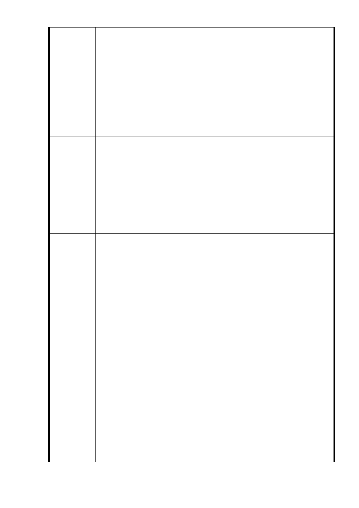

處管轄？明顯用大眾可利用空間，變更為交通特地用途，蠶食
人民福祉。（公園用地遭到不當挪用）
10 .（七）廢除廣慈博愛院與福德平宅間之計畫道路。
陳情理由
廣慈博愛院與福德平宅間原有之八公尺計畫道路，配合社會
福利設施用地重新調整定位與範圍後，該計畫道路不利社會
福利設施整體規劃，已無存在必要，予以廢除。
10．請政府團隊說清楚為何廢 8 公尺巷道又規劃 20 公尺大道在
建議辦法
此基地，是否為商業區 33 層大樓財團利益鋪路？（未說明為
何需要規劃高規格道路）
11 .（八）參酌原開發強度規定進行規劃開發
為提高公有土地利用效能，並配合本市公營住宅政策，滿足
市民基本居住需求，在不影響周邊交通服務水準，及原機關
用地容積率 400％上限下，進行規劃開發（原計畫：降低原
陳 情 理 由 有開發強度、總量管制本計畫區原屬機關用地，建蔽率 40％
、容積率 400 %，惟地區現況發展程度密集，公共設施服務
水準不佳，宜降低整體開發強度，故比照鄰近第三種住宅區
容積率 225％【細部計畫】進行本計畫區開發總量管制。）
11．請在本計畫書中還是相對於原計畫建蔽率 40 %，訂明新計
畫的建蔽率的數值，免得又是空白支票一張．有計畫等於沒計
建 議 辦 法 畫。另容積率由 225 %提高到 400 %，沒有提到配套措施。（
不定建蔽率，空白規劃。容積率提高近 2 倍，沒提到配套措施
。）
1 2．陸、實施進度與經費
（一）開發方式得採設定地上權方式，交由民間廠商開發興
建與經營管理（BOT），或由本府編列預算經費開闢。並預訂
於 103 年起辦理規劃設計及招標作業
二、（刪除）
（原計畫：
一、預定於民國 95 年起進行廣慈博愛院及福德平宅院民及現住
陳情理由
戶安置作業，並就優先騰空土地進行簡易綠化，自民國 96
至 100 年開始進行本案基地社會福利設施用地、商業區、公
園用地及道路用地之開發作。本案應以整體開發方式辦理，
開發方式得採設定地上權方式，交由民間廠商開發興建與經
營管理（BOT），或由本府編列預算經費開闢。
二、本案 BOT 開發計畫係將社會福利設施用地、公園用地、道
路用地及商業區交由得標廠商整體開發、營運及管理，預計
開發作為老人住宅、養護中心、平價住宅等社會福利設施，
以及地下停車場、附屬商業設施等。預計 96 年辦理招商，由
- 38 -